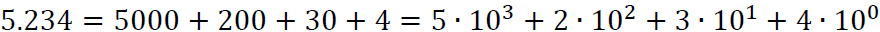

Sistema Decimal
É o sistema de numeração de base dez, ou seja, possui dez símbolos que representam os números.
Ele é representado pelos seguintes símbolos: 0, 1, 2, 3, 4, 5, 6, 7, 8 e 9
Decomposição do número decimal

Exemplo retirado do material disponibilizado pela professora Valéria Lessa
Voltar para página inicial